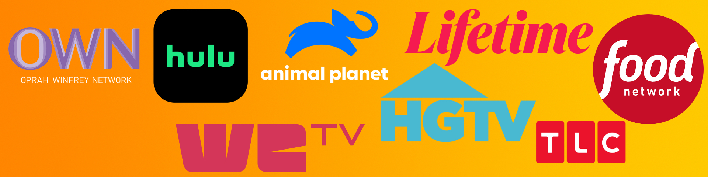

Video Editor, Media Editor/Producer, AI Content Producer
Experience
Video editor with a strong background in lifestyle content, reality television, and documentary editing. Skilled in storytelling, pacing, and technical execution across multiple genres, including home renovation, cooking, lifestyle programming, and feature films. Proven ability to manage tight deadlines and collaborate with producers and directors to shape narratives and deliver engaging content for national broadcast and streaming platforms.
Skills
- Video editing (Avid Media Composer, Davinci Resolve, Adobe Premiere Pro, Final Cut Pro)
- Motion graphics (Fusion, After Effects, Blender3D)
- AI skills (Ollama, ComfyUI, ChatGPT, EddieAI, Msty, n8n)
- Data (Nvim, VSCode, Quarto)
Selected Work - Series

- Flip or Flop (Seasons 1–10, Pilot Editor)

- House Hunters / House Hunters International
- Christina on the Coast
- Rustic Rehab
- House Hunters Renovation
- Vintage Flip (Pilot Editor)
- Joan & Melissa: Joan Knows Best (Seasons 2–4)

- Downsized
- Take My Kids Please (Pilot Editor)
- Tune Up My Man (Pilot Editor)
- Meat & Potatoes

- Chef Vs. City
- 40 Dollars a Day with Rachael Ray
- Rachael Ray’s Tasty Travels
- Take It Off
- Designing for the Sexes
- Hammer Heads
- Take Over My Makeover
- Color Correction (Pilot Editor)
- Ground Rules (Pilot Editor)
- Designers’ Challenge
- Landscapers’ Challenge
- Designed to Sell
- Going Home

- UnHinged
- Baby Story
- U.S. Marshals, The Real Story – 3 part series

- Diettribe
- Head to Toe
- Rolling with Zach Anner

- The Ambush Cook
Streaming - Feature Films - Documentaries
- The Booth at the End - 62-episode web series directed by Jessica Landaw. Available on Tubi

- Disclosure - To Tell or Not To Tell – Directed by Vanessa Roth & Ali Dixon
- Swimming Upstream (PieTown Productions) – Directed by Jennifer Gold
- Print Shop (Feature Film) - Directed by Rodney Beckwith
- In the Name of Justice (Feature Film) – Directed by John Pogue
Certificates
Google AI Essentials by Google on Coursera. (July 28, 2025)

Google Prompting Essentials by Google on Coursera. (July 31, 2025)

SQL for Data Analytics (Luke Barousse)